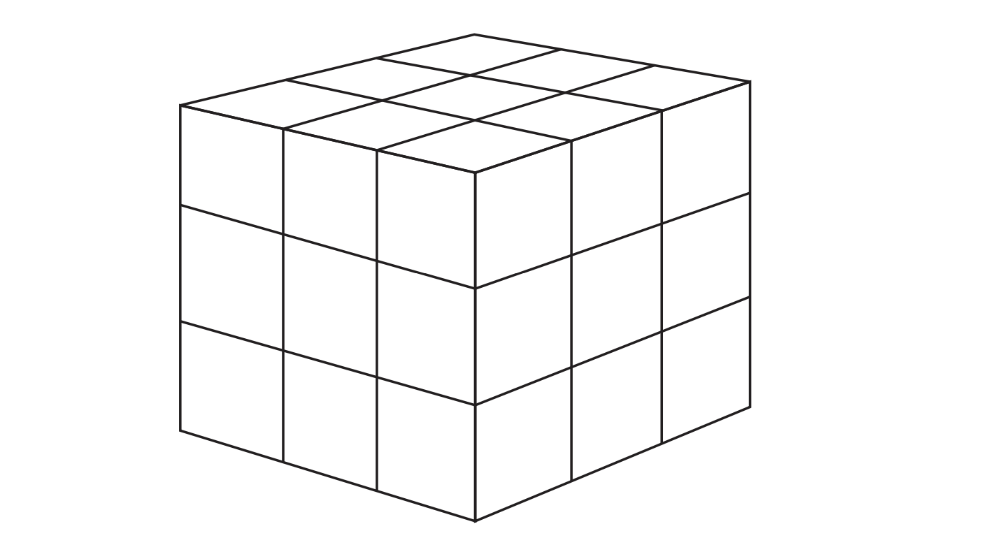
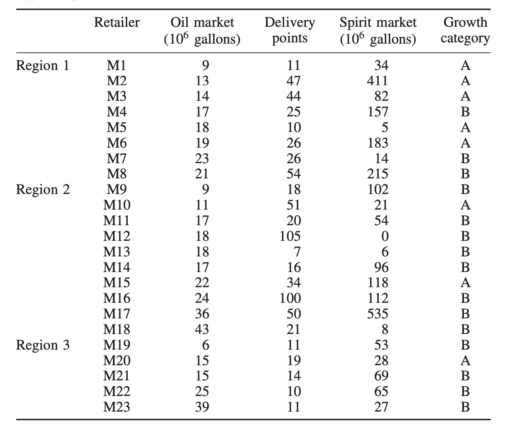
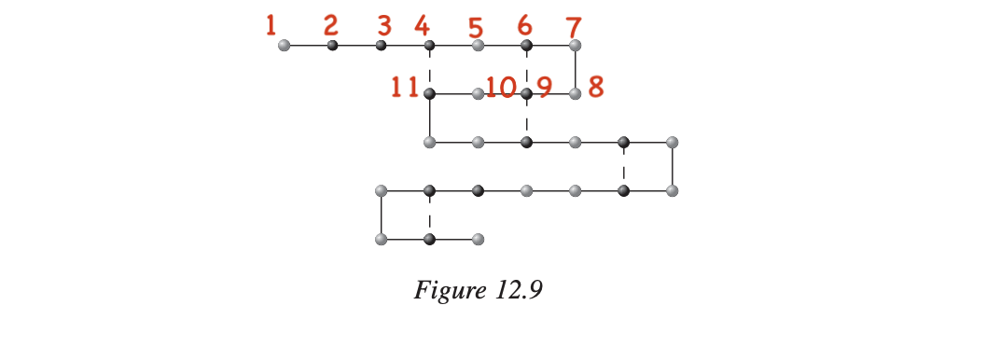
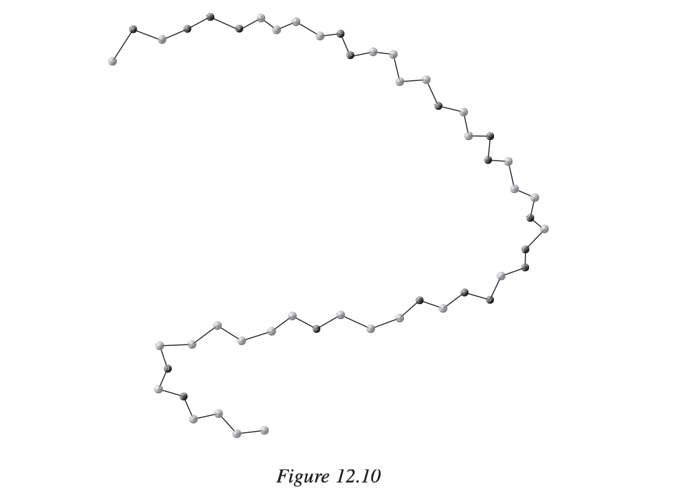

汇总一些OR的习题¶
本意是对一些有代表性的题目做一个汇总。背地里希望整理一套结构化的运筹题集，日后在LLM上或许有用。
感谢GPT-4o在本页面内容编写整理过程中提供的巨大帮助，尤其是在LaTeX公式生成、表格整理、文本排版等方面。
单纯形法及基础的数学建模¶
生产计划制定 （Easy）¶
某饲料厂用玉米胚芽粕、大豆饼和酒槽等 3 种原料生产3种不同规格的饲料，由于了种原料的营养成分不同，因而不同规格的饲料对 了种原料的比例有特殊的要求，具体要求及产品价格、原料价格、 原料的数量见表 1.38，试问该饲料厂应制定怎样的生产计划使得总利润最大？建立线性规划模型，并尝试用软件求解。
| 规格 | 产品 Q 1 | 产品 Q 2 | 产品 Q3 | 原料价格 | 原料可用量 |
|---|---|---|---|---|---|
| P1 | ≥ 15 % | ≥ 20% | 25 % | 1.7 | 1500 |
| P2 | ≥ 25 % | ≥ 10% | - | 1.5 | 1000 |
| P3 | - | - | ≤ 40 % | 1.2 | 2000 |
| 产品价格 | 2 | 3 | 2.3 | - | - |
- 答案
- 参考作业I.
1.1 产品计划问题 (Hu)¶
某厂生产 \(I、II、 III\) 三种产品，都分别由A、B两道工序加工而成。A工序由\(A_1\), \(A_2\) 两个机器完成，有\(B1、B2、B3\) 三种设备可用于完成\(B\)工序。已知产品I可在\(A、B\)任何一种设备上加工；产品II可在任何规格的\(A\)设备上加工，但完成\(B\)工序，只能在\(B_1\) 设备上加工; 产品 III 只能在\(A_2\)与\(B_2\)设备上加工。加工单位产品所需工序时间及其他各项数据见表，试安排最优生产计划，使该厂获利最大。
| 设备 | 产品 | 设备有效台时 / h | 设备加工费 元 / h | ||
| I | II | III | |||
| A_1 | 5 | 10 | 6000 | 0.05 | |
| A_2 | 7 | 9 | 12 | 10000 | 0.03 |
| B_1 | 6 | 8 | 4000 | 0.06 | |
| B_2 | 4 | 11 | 7000 | 0.11 | |
| B_3 | 7 | 4000 | 0.05 | ||
| 原料费（元/件） | 0.25 | 0.35 | 0.50 | ||
| 售价（元/件） | 1.25 | 2.00 | 2.80 | ||
- 答案
- 尚未开始。
1.13 人员安排问题 I（整数规划）¶
某快餐店坐落在远离城市的风景区，平时游客较少，而每到双休日游客数量猛增。快餐店主要为游客提供快餐服务，该快餐店已经雇佣了两名正式职工，主要负责管理工作，每天需要工作8小时，其余的工作都由临时工担任，临时工每天要工作4小时。双休日的营业时间为11:00~22:00，根据游客的就餐情况，在双休日的营业时间内所需的职工数（包括正式工和临时工）如表1.34所示：
- 一名正式职工11:00开始上班，工作4小时后休息1小时，而后再工作4小时；另一名正式职工13:00开始上班，工作4小时后休息1小时，而后再工作4小时，又知临时工工资为4元/小时。请问：
- 在满足对职工需求的条件下，如何安排临时工的班次，使得使用临时工的成本最低？
- 如果临时工每班工作时间可以为4小时，也可以为3小时，那么应该如何安排临时工的班次，使得使用临时职工的总成本最小？这样比方案（1）能节省多少费用？
表1.34 营业时间与所需职工数量
| 营业时间 | 所需职工数/人 | 营业时间 | 所需职工数/人 |
|---|---|---|---|
| 11:00~12:00 | 9 | 17:00~18:00 | 6 |
| 12:00~13:00 | 9 | 18:00~19:00 | 12 |
| 13:00~14:00 | 9 | 19:00~20:00 | 12 |
| 14:00~15:00 | 3 | 20:00~21:00 | 7 |
| 15:00~16:00 | 3 | 21:00~22:00 | 7 |
| 16:00~17:00 | 3 | - | - |
解答
分析一下，这个人员安排问题是“不过夜”的。也就是，上班时间仅在 11:00 ~ 22:00。不会有第一天晚上上班的员工直到第二天的早上还工作这种情况。我们设 \(x_i\) 为在 \(i\) 点上班的员工数量。为一个非负整数。
| 营业时间 | 临时工人数 | 正式工人数 | 所需职工数 |
|---|---|---|---|
| 11:00~12:00 | \(x_{11}\) | 1 | 9 |
| 12:00~13:00 | \(x_{11} + x_{12}\) | 1 | 9 |
| 13:00~14:00 | \(x_{13} + x_{11} + x_{12}\) | 2 | 9 |
| 14:00~15:00 | \(x_{14} + x_{11} + x_{12} + x_{13}\) | 2 | 3 |
| 15:00~16:00 | \(x_{15} + x_{12} + x_{13} + x_{14}\) | 1 | 3 |
| 16:00~17:00 | \(x_{16} + x_{13} + x_{14} + x_{15}\) | 2 | 3 |
| 17:00~18:00 | \(x_{17} + x_{14} + x_{15} + x_{16}\) | 1 | 6 |
| 18:00~19:00 | \(x_{18} + x_{16} + x_{16} + x_{17}\) | 2 | 12 |
| 19:00~20:00 | \(x_{16} + x_{17} + x_{18}\) | 2 | 12 |
| 20:00~21:00 | \(x_{17} + x_{18}\) | 1 | 7 |
| 21:00~22:00 | \(x_{18}\) | 1 | 7 |
根据上表即可列出数学模型的约束等。对于第二个问题，提示思路：用 \(x_{i}\) 表示第 \(i\) 时开始上班的4h一班的临时工的人数； 用 \(y_i\) 表示第 \(i\) 时开始上班的 3h 一班的临时工人数。建模思路相同。
参考答案
求解可得最优解为： \(x_{11}=8\), \(x_{12}=1\),\(x_{13}=0\),\(x_{14}=0\),\(x_{15}=1\),\(x_{16}=0\),\(x_{17}=4\),\(x_{18}=6\)。总成本为 320.
第二问，8个临时工从11点开始上班，1个临时工从13点开始上班，1个临时工从15点开始上班，还有4个临时工从17点开始上班，每班均连续工作3小时；另外安排6个临时工从18点开始上班，此班连续工作4小时。这样，全天使用临时工的总成本为 元，比方案（1）节省56元。
1.13.1 人员安排问题 II （整数规划）¶
海河市公交公司负责全市公交车辆的运行与维修管理，已知每天各时段所需人数如表所示，公司所有人员每天从上班起连续工作6小时，每周安排一天休息。要求:
- 该公司需配备多少人员，能满足公司的正常运转;
- 由于工作时间差别，有的早上5 : 00就上班，有的到23 : 00才下班; 每周休息一天，有的安排在周一到周五，有的安排在周六或周日，不够平等。因此提出如何安排一天内的倒班及每周内一天的休息日的日期，关系公司人员的切身利益。怎样才能做到公平合理？
| 营业时间 | 所需职工数/人 | 营业时间 | 所需职工数 / 人 |
|---|---|---|---|
| 05:00~07:00 | 26 | 13:00~15:00 | 38 |
| 07:00~09:00 | 50 | 15:00~17:00 | 50 |
| 09:00~11:00 | 34 | 17:00~19:00 | 46 |
| 11:00~13:00 | 40 | 19:00~21:00 | 36 |
| - | - | 21:00~23:00 | 26 |
参考答案
问题1:
| 时间 | 上班人数 | 时间 | 上班人数 |
|---|---|---|---|
| 05:00~06:00 | 26 | 14:00~15:00 | 0 |
| 06:00~07:00 | 0 | 15:00~16:00 | 12 |
| 07:00~08:00 | 24 | 16:00~17:00 | 0 |
| 08:00~09:00 | 0 | 17:00~18:00 | 12 |
| 09:00~10:00 | 0 | 18:00~19:00 | 0 |
| 10:00~11:00 | 0 | 19:00~20:00 | 12 |
| 11:00~12:00 | 16 | 20:00~21:00 | 0 |
| 12:00~13:00 | 0 | 21:00~22:00 | 2 |
| 13:00~14:00 | 22 | 22:00~23:00 | 0 |
可见一天至少需要126个人。
问题2:促进排班的公平性。
有意思！
1.13.2 人员安排问题 III （整数规划）¶
源街邮局从周一到周日每天所需的职员人数如下表所示 职员分别 安排在周内某一天开始上班，并连续工作5天，休息2天。
| 周 | 一 | 二 | 三 | 四 | 五 | 六 | 日 |
|---|---|---|---|---|---|---|---|
| 所需人数 | 17 | 13 | 15 | 19 | 14 | 16 | 11 |
要求确定： - 该邮局至少应配备多少职员，才能满足值班需要； - 因从周一开始上班的，双休日都能休息；周二或周日开始上班的，双休日内只能 有一天得到休息；其他时间开始上班的，两个双休日都得不到休息，很不合理。因此邮局准备对每周上班的起始日进行轮换(但从起始日开始连续上5天班的规定不变)问如何 安排轮换，才能做到在一个周期内每名职工享受到同等的双休日的休假天数： - 该邮局职员中有一名领班，一名副领班。为便于领导，规定领班于每周一、三、四、五、六上班，副领班于一、二、三、五、日这5天上班。据此试重新对上述要求 (1)和(2） 建模和求解。
1.14 组合投资问题 I (线性规划)¶
某投资者有50万元可用于长期投资，可供选择的投资品种包括购买国债、公司债券、股票、投资房地产、银行短期与长期储蓄。各种投资方式每万元的投资期限、年收益率、风险系数和增长潜力如表1.31所示。如果投资者希望其投资组合的平均投资期限不超过5年，平均期望年收益率不低于13%，平均风险系数不超过4，平均收益的增长潜力不低于10%，在满足上述要求的前提下，请帮助该投资者制定一个组合投资方案，使得平均年收益率最高
表1.31 各种投资项目的相关数据
| 序号 | 投资方式 | 投资期限/年 | 年收益率/% | 风险系数 | 增长潜力/% |
|---|---|---|---|---|---|
| 1 | 国债 | 3 | 5 | 1 | 0 |
| 2 | 公司债券 | 10 | 10 | 3 | 15 |
| 3 | 股票 | 6 | 25 | 8 | 30 |
| 4 | 房地产 | 2 | 20 | 6 | 20 |
| 5 | 短期储蓄 | 1 | 3 | 1 | 5 |
| 6 | 长期储蓄 | 5 | 6 | 2 | 10 |
- 解
- 决策变量：给每个投资项目的投资为 \(x_i , i = 1,2,3,4,5,6\)
1.15 合理下料问题 (Cutting Stock Problem)¶
下料问题在机械行业、建筑业、造纸、服装等行业的原材料加工过程中经常会遇到。根据原材料和加工产品的不同，一般可以分为一维下料问题和二维下料问题。一维下料问题通常只考虑原材料和加工产品长度的问题，如果是同时考虑长度与宽度两个维度的话，则是二维下料问题。下面考虑一个具体的一维下料问题：
已知制造某机床需要A、B、C三种轴，其规格和需求量如下表1.32所示。如果各种轴都用长5.5米的圆钢来截毛坯，现要制造100台机床，请问如何下料使得所用的原材料最省？
表1.32 轴规格和需求量
| 轴类 | 规格：长度（米） | 每台机床所需件数 |
|---|---|---|
| A | 3.1 | 1 |
| B | 2.1 | 2 |
| C | 1.2 | 4 |
1.16¶
假设某种小型设备的生产工厂签订了未来 \(n\) 个月的交货合同，其中第 \(i\) 个月的合同交货量为\(d\)台, \(i =1,..,n\)。该工厂每个月在正常生产时间内可生产\(r_i\) 台设备，每台生产成本为 \(b\) 元。如果加班生产，由于要支付加班费，每台 生产成本为 \(c\) 元 \((c > b)\) 。生产的设备如果不交货，则每台每月的存储成 本为 \(s\) 元。请建立线性规划模型帮助工厂制定合理的生产计划，使得在完成交货合同的前提下最小化总成本。
1.17¶
请给出下列问题等价的LP模型。
\(\min 2x_1 + 3 | x_2 - 10 |\)
s.t. \(|x_1 + 2 | +| x_2| \leq 5\)
- 解答
- 解答如下：
设 \(z_1 ≥ |x_2− 10|，z_2 ≥ |𝑥_1 + 2|，z_3 ≥ |x_2 |\)，那么可等价改写为: (决策变量的范围略)
对偶单纯形法以及影子价格¶
请把下面的线性规划问题转化为对偶问题。
- 解答
- 对偶问题写如下：
请把下面的线性规划问题转化为对偶问题。
- 解答
- 对偶问题可以写作：
这个例子实际上就是运输问题的标准形式，和这个标准形式的对偶问题。
棉花厂案例¶
已知某纺织厂生产三种针织产品，其下月的生产计划必须满足以下约束:
\(x_1 +x_2 +2x_3 \leq 12\)
\(2x_1 + 4x_2 + x_3 \leq f\)
\(x_1,x_2,x_3 \geq 0\)
\(x_1 , x_2 , x_3\) 是三种产品的产量，第一个约束是给定的设备工时约束，第二个约束 是原料棉花的约束，取决于当月的棉花供应量 \(f\) 。假设三种产品的单位净利润分别为 2，3 和 3。请给出原料棉花的影子价格与其供应量 \(f\) 的关系 \(\lambda_2(f)\) ， 以及纺织厂总净利润与 \(f\) 的关系\(z(f)\)，并绘制\(z(f)\)的图。
整数规划¶
某公司在今后五年内考虑给以下的项目投资。已知：
-
项目A：从第一年到第四年每年年初需要投资，并于次年没回收本利115%段要求第一年投资最低金额为¥40,000 后，三年不限；
-
项目B：第三年初需要投资，到第五年末能回收本利128%，但规定最低投资金额为¥30,000 ，最高投资金额为¥50,000；
-
项目C：第二年初需要投资，到第五年末能回收本例140%，但规定其投资额或为¥20,000或为¥40,000或为¥60,000或为¥80,000；
-
项目D：五年内每年年初可购买公债，于当年末归还并加息6%，此项金额投资不限。
该公司现有资金¥100,000 ，问她该如何确定这些项目的年投资额，使得到第五年末拥有的资金本利总额最大？
- 解答
- 解:设 \(x_{ij}\) 表示第 \(i\) 年初第 \(j\) 个项目可投入的投资额度，其中 \(i = 1,2,...,5\) ; \(j = A,B,C,D\)。\(f_k\) 表示项目C对于投资额的选择，若 \(f_1=1\)，则表示选择2万的投资额， \(f_1=0\)则表示不选择 2万的投资额;若 \(f_2=1\)，则表示选择 4万的投资额， \(f_2=0\)则表示不 选择 4 万的投资额;若 \(f_3=1\)，则表示选择 6 万的投资额， \(f_3=0\) 则表示不选择 6 万的投 资额;若 \(f_4=1\)，则表示选择 8 万的投资额， \(f_4=0\)则表示不选择 8 万的投资额。则可建 立整数规划模型如下所示:
动态规划¶
机器生产 ( DP )¶
某工厂有100 台机器，拟分4期使用，在每一周期仅有两种生产任务，若将 \(x_1\) 台机器投入第一种生产任务，则将余下的机器投入第二种生产任务。根据经验，投入第一种生产任务的机器在一个生产周期中将有1/3的机器报废，投入第二种生产任务的机器则在一个生产周期中將有1/10 的机器报废。如果在一个生产周期中，第一种生产任务每台机器可收益10 元，第二种生产任务每合机器可收益7元。
问怎样分配机器数使总收益最大？其最大收益是多少？
- 标记
- 记 \(f_k(s_k)\) 表示在第 \(k\) 周期初始拥有 \(s_k\) 台机器时能获得的最大收益。 \(x_{k1}\) 表示在第 \(k\) 周期投入第 1 个生产任务的机器的数量。
- 第四周期：
-
\(f_4(s_4) = 10x_{41} + 7(s - x_{41})\)
$ = 3x_{41} + 7s$
所以第四周期所有的机器(\(s\)台)都投入第一个任务。最大收益： \(f_4(s_4) = 10s\)
- 第三周期：
-
\(f_3(s_3) = 10x_{31} + 7(s_3 - x_{31}) + f_4(s_4)\)
\(= 3x_{31} + 7s_3 + 10 * ( 2 / 3 x_{31} + 9 / 10 (s_3 - x_{31}))\)
计算后发现，第三周期所有的机器都投入第一个任务。最大收益： \(f_3(s_3) = 50 / 3 * s_3\)
以此类推到第一个周期即可。最后的答案：
第一周期 100 台机器全部用于第二种任务的生产;
第二周期 90 台机器全部用于第 二种任务的生产;
第三周期 81 台机器全部用于第一种任务的生产;
第四周期 54 台机器全部用于第一种任务的生产。
人员分配 ( DP )¶
某科研项目由 A, B, C 三个小组用不同的手段分别研究，他们失败的 概率各为 0.4, 0.6, 0.8。为了减少三个小组都失败的可能性，现决定给三个小 组中增加两名高级科学家到各小组。各小组科研项目失败概率如下表。问 如何分派科学家才能使三个小组都失败的概率(即科研项目最终失败的概 率)最小?
| 专家数 | A 失败概率 | B失败概率 | C 失败概率 |
|---|---|---|---|
| 0 | 0.4 | 0.6 | 0.8 |
| 1 | 0.2 | 0.4 | 0.5 |
| 2 | 0.15 | 0.2 | 0.3 |
- 标记
- 按照小组来说分成 3 个阶段。\(s_k\) 表示从第 \(k\) 阶段到第 3 阶段分配的专家的数量。决策变量：\(x_k\) 表示第 k 个阶段分的专家数量。 \(p(k, n)\) 在第 \(k\) 阶段分配 \(n\) 个专家，该任务失败的概率。\(f_k (s_k )\) 表示在状态 \(s_k\) 时已经历的阶段都失败的概率。
\(f_3(0) = d(3, 0) = 0.8, f_3(1) = d(3,1) = 0.5, f_3(2) = d(3,2) = 0.3\)
\(f_2 (0)= f_3 (0)*d(2,0)=0.8*0.6 = 0.48\)
\(f_2(1) = \min \{ f_3(0) * 0.4, f_3(1) * 0.6 \} = 0.3\)
\(f_2(2) = \min \{ f_3(0) * 0.2, f_3(1) * 0.5, f_3(2) * 0.6 \} = 0.16\)
\(f_1(2) = \min \{ f_2(0) * d(3,2), f_2(1) * d(3,1), f_2(2) * d(3, 0) \} = 0.06\)
因此，最佳分配为:A 组 1 个专家，B 组无专家，C 组 1 个专家。
多目标规划¶
Q1: 已知单位牛奶、牛肉、鸡蛋中的维生素及胆固醇含量等有关数据见下表。 如果只考虑这三种食物，并且设立了下列三个目标:
- 尽量满足三种维生素的每日最小需求量;
- 使每日摄入的胆固醇尽可能少;
- 使每日购买食品的费用尽可能少。
请建立问题的目标规划模型。
| 项目 | 牛奶(500g) | 牛肉 (500g) | 鸡蛋 (500g) | 每日最小需求量 |
|---|---|---|---|---|
| 维生素A/mg | 1 | 1 | 10 | 1 |
| 维生素C/mg | 100 | 10 | 10 | 30 |
| 维生素D/mg | 10 | 100 | 10 | 10 |
| 胆固醇/单位 | 70 | 50 | 120 | - |
| 费用/元 | 1.5 | 8 | 4 | - |
- 解答
- 设三种食物的摄入量分别为 \(x_1, x_2, x_3\)
Q2: (对应原版书3.19)
设 \(x_{ij} (i = A,B,C; j = 甲，乙，丙)\) 表示配制第 \(j\) 等级的品牌沥青所使用的第 \(i\) 等级 的材料的用量。则根据题意，可建立如下目标规划的数学模型:
其中，上式中的 z 通过下面的模型给出：
图论¶
最大流问题的应用¶
在美国职业棒球例行赛中，每个球队都要打 162 场比赛(对手包括但不限于同一分区里的其他队伍，和同一支队伍也往往会有多次交 手)，所胜场数最多者为该分区的冠军;如果出现并列第一，则用加赛决出冠军。在比赛过程中，如果发现某支球队无论如何都已经不可能以第一名或者并列第一名的成绩结束比赛，那么这支球队就提前被淘汰了(虽然它还要继续打下去)。
| 队伍 | 胜 | 负 | 剩余 | 纽约 | 巴尔的摩 | 波士顿 | 多伦多 | 底特律 |
|---|---|---|---|---|---|---|---|---|
| 纽约 | 75 | 59 | 28 | 0 | 3 | 8 | 7 | 3 |
| 巴尔的摩 | 72 | 62 | 28 | 3 | 0 | 2 | 7 | 4 |
| 波士顿 | 69 | 66 | 27 | 8 | 2 | 0 | 0 | 0 |
| 多伦多 | 60 | 75 | 27 | 7 | 7 | 0 | 0 | 0 |
| 底特律 | 49 | 86 | 27 | 3 | 4 | 0 | 0 | 0 |
该表是某次美国联盟东区比赛的结果。在该小组分区中，纽约队暂时排名第一，总共胜 75 场，负 59 场，剩余 28 场比赛没打，其中和巴尔的摩还有 3 场比赛，和波士顿还有 8 场比赛，和多伦多还有 7 场比赛，和底特律还有 3 场比赛(还有 7 场与不在此分区的其他队伍的比赛)。底特律暂时只有 49 场比赛获胜，剩余 27 场比赛没打。如果剩余的 27 场比赛全都获胜的 话，是有希望超过纽约队的；即使只有其中 26 场比赛获胜，也有希望与纽约队战平，并在加赛中取胜。然而，根据表里的信息已经足以判断，其实底特律已经没有希望夺冠了，请你不妨来分析推导一下 （提示:考虑相应 的网络最大流问题）
对于底特律来说，最好的局面就是，剩余 27 场比赛全都赢了，并且其他四个队在对外队的比赛中全都输了。这样，底特律将会得到 76 胜的成绩，从而排名第一。但是，麻烦就麻烦在，剩下的四个队内部之间还会有多次比赛，其中 必然会有一些队伍获胜。为了让底特律仍然排在第一，我们需要保证剩下的四个队内部之间比完之后都不要超过 76 胜的成绩。换句话说，在纽约、巴尔的摩、波士顿、多伦多之间的3 + 8 + 7 + 2 +7 + 0 = 27场比赛中，纽约最多还能 胜 1 次，巴尔的摩最多还能胜 4 次，波士顿最多还能胜 7 次，多伦多最多还能胜 16 次。只要这 27 场比赛所产生的 27 个胜局能够按照上述要求分给这四个队，底特律就有夺冠的希望。
根据上图，利用 Ford–Fulkerson 算法寻找整个网络的最大流，若流量能够达到 27 ，这就说明我们能够仔细地安排四支队伍之间全部比赛的结果，使得它们各 自获得的胜局数都在限制范围之内，从而把第一名的位置留给底特律;如果最 大流的流量无法达到 27 ，这就说明四个队之间的比赛场数太多，无法满足各队 获胜局数的限制，那么底特律也就不可能取胜了。 在图示的网络中，可能的最大流量是 26，没有达到 27 ，因而底特律必败无疑。
复合应用题¶
生产交付问题-1¶
要点
运输问题的转化
某飞机制造厂根据合同要求，今后 3 年的年底各交付 4 架飞机。每架 飞机的生产成本在 3 年中各不相同，分别为 500，550 和 600 万元，如果加 班生产，则每架成本将增加 50 万元。
积压飞机每年增加维护保养费 30 万元。该厂今年初储存 1 架飞机，今后 3 年生产能力为，第 1 年正常生产 2 架， 加班生产 2 架；第2年正常生产 3架 ，加班生产 2 架;第3年正常生产3架， 加班生产 3 架。如果第 3 年年底需要储存一架飞机备用，试分析该厂如何安排计划，既满足上述要求，又使总的费用支出最少(试利用计算机求解)。
| 生产 \ | 销售 | 第一年 | 第二年 | 第三年 | 虚拟需求 | 供应量 |
|---|---|---|---|---|---|---|
| 第一年 | 正常 | 500 | 530 | 560 | 0 | 2 |
| 第一年 | 加班 | 530 | 580 | 610 | 0 | 2 |
| 第二年 | 正常 | M | 550 | 580 | 0 | 3 |
| 第二年 | 加班 | M | 600 | 630 | 0 | 2 |
| 第三年 | 正常 | M | M | 600 | 0 | 3 |
| 第三年 | 加班 | M | M | 650 | 0 | 3 |
| 需求 | 3 | 4 | 5 | 3 | 15 |
列表如上，这是供过于求的运输问题，考虑时间关系，第一年只有第一年的生产计划，但是第一年的飞机可以用于第二年。
每年的需求怎么确定：看每年的需求，如果最开始的时候有库存了，第一年需要生产的就少一点。如果要求最后一年有库存，那么最后一年生产的要多一点。
约束公式略过。
案例-1 新美公司分销系统再造¶
新美公司业务拓展，在深圳和顺德建立了两个制造基地。为了覆盖全国市场，公司在北京和上海、广州建立分销中心，向9个目标客户区销售产品（分别是\(T_1, T_2,...,T_9\)）。生产基地的生产成本不同。随着竞争对手加入，公司需要提高分销系统的效率。深圳每个季度的生产能力是30000台，顺德基地的生产能力20000台/季度。具体参数如下。
现有的分销系统中，北京负责\(T_1, T_2, T_3, T_4\)，上海负责\(T_5,T_6,T_7\)。剩下的是广州负责。每个客户区域由唯一指定的分销中心负责。
生产基地到分销中心的运输价格
| 北京 | 上海 | 广州 | |
|---|---|---|---|
| 深圳 | 42 | 32 | 15 |
| 顺德 | - | 35 | 12 |
| 客户地区 | 需求 ｜ 客户地区 ｜ 需求 ｜ 客户地区 ｜ 需求 ｜ 试分析：
- 根据目前分销策略，为使得总运输成本最小，下个季度的运输方案是什么？
- 有些高管建议放弃客户必须由唯一指定的分销中心负责的原则，可以允许客户从任意可行的分销中心拿货，给出该意见实施前后在总成本上的差异；
- 如果允许从生产基地到客户的直接供货是否有利于提升效率。假设深圳到\(T_2\)，顺德到\(T_8，T_9\)的单位运输成本分别是3.5,0.3,0.7元。考虑这三个直销线路后，分销的总成本能否减少？
案例-2 竞标价格的确定¶
\(N\) 公司是一家拥有高新技术专利的智能监控设备有限公司，正处在高速发展期。最近刚接到一份竞标的邀请函，为国家电网的高压变电站供应智能监控设备。信函中提到国家电网公司将要在首批10个地区的高压变电站中安装智能监控设备。N公司在南京有一个设备制造厂。由于有技术上的领先优势，市场需求过盛，产能己遭遇瓶颈。为了能抢占更大的市场份额，公司已经与深圳的一家电子设备制造企业达成协议，投权该企业代工生产8000 台监控设备。一台设备在N公司自己生产的制造成本为 1200 元，而从深圳的企业采购的价格为 1500 元。表3.25 是国家电网公司给出的 10个地区需要设备的台数。
| 地区 | A | B | C | D | E | F | G | H | I | J |
|---|---|---|---|---|---|---|---|---|---|---|
| 台数 | 2240 | 680 | 803 | 1045 | 2420 | 647 | 3300 | 880 | 3215 | 1480 |
N 公司从货运公司得到了当前专业设备的运价表，如下：“——”表示由于距离太远而不考虑的运输路径。
| 地区 | A | B | C | D | E | F | G | H | I | J |
|---|---|---|---|---|---|---|---|---|---|---|
| 南京 | —— | 84 | 83 | 45 | 36 | —— | —— | 34 | 34 | 34 |
| 深圳 | 22 | 74 | 49 | —— | —— | 22 | 22 | —— | —— | —— |
为了向国家电网公司提交一份标书，N公司需要确定每台设备的价格。在以往的交易中，N公司采取的定价策略是成本加提成策咯，一般为30%的提成。然而面对国家电网公司这一重要客户，一直没有打入电力行业市场的 N 公司决定考虑采用低价策路。同时为了能有足够的能力满足现有订单的和将来从其他企业发来的订单，管理层决定为这个园家电网的订单预留最多 9500 台的产能。
请为 N公司准备一份标书。在报告中至少需要考虑下面的几个问题：
-
如果N公司竞标成功，具体的供货和运输方案是什么？
-
N公司的每台设备的保本价格是多少？ 也就是说，为了不亏本，公司能接受的最低价格。
-
如果N公司对该订单势在必得，想进一步压低价格提高竞争力。请挺出调整产能的方案以保证其在拿下订单后不亏本。
-
如果N公司想获得20%的利润，他的标价应该为多少？
-
由于运输成本受到油价的影响。请讨论油价波动对N公司提交的标价的影响
案例-3 供给计划问题¶
在某个建筑工程的施工中某种设备易于损坏，因此X公司专门设立一个设备供给处负责工程施工期间对这种设备的补充供给。供给处有三种途径来满足工程施工对该设备的需求。第一条途径是利用自己的一个修理车间对该设备进行公司内部的维修。内都维修该设备的修理时间为4 周，每台所需费用为 100 元。第二条途径是外送维修，即将没各达到专门的设备维修公司进行修理。修理时间为1周，但每台费用为300元，第三条途径是购入新设备。（每合新设备的价格为900元）供给处需租用仓库存放已修、待修或报废的设备。每台每周的存储费为 10 元。报废的设备存储在仓库中等工程完工时统一处理。
假设每周末X公司工程处将损坏的设备送到供给处并领走相同数量的好设备。估计该工程可在n周内完工（为简化取 \(n = 10\)）。请你为供给处设计一个合理的供给计划。要求在绝对保证工程需要的条件下能使得供给处所花费的总费用最少。
Williams Problems¶
画圈·打叉 (Tic-Tac-Toe)¶
对应书中12章第17题
共有27个单元格，按照3×3×3的三维阵列排列，如图12.5所示。
如果三个单元格位于同一水平线、垂直线或同一对角线上，则认为它们位于同一条直线上。对角线存在于每个水平面和垂直截面上，并且连接立方体的相对顶点。（总共有49条直线。）
现有13个白球（代表“圈”）和14个黑球（代表“叉”），需要将它们一个一个地放置在单元格中，使得所有球都位于某一颜色的直线的数量最小化。
请给出最优的摆放方案。

市场份额问题 (Market Sharing)¶
某大型公司有两个分部，D1 和 D2。该公司为零售商提供石油和酒精产品。这是一个规模较小的版本，类似于英国石油公司和壳牌公司在历史上最大的一次拆分中面临的问题。1972 年的原始模型被证明无法求解。
现希望将每个零售商分配到分部 D1 或 D2 中，该分部将作为零售商的供应商。分配应尽可能满足以下要求：D1 控制 40% 的市场份额，而 D2 控制剩余的 60%。零售商的编号如下：M1 到 M23。每个零售商都有一个对石油和酒精的市场估算。零售商 M1 至 M8 位于区域 1；零售商 M9 至 M18 位于区域 2；零售商 M19 至 M23 位于区域 3。一些零售商被认为具有良好的增长前景，归类为 A 组，其余归类为 B 组。每个零售商的交付点(Delivery Points)数量如下表所示。
希望在以下各方面尽可能实现 D1 和 D2 的 40%:60% 份额分割：
- 交付点总数
(Delivery Points) - 酒精市场控制份额
(Spirit Market) - 区域 1 石油市场控制份额
(Oil Market in Region 1) - 区域 2 石油市场控制份额
(Oil Market in Region 2) - 区域 3 石油市场控制份额
(Oil Market in Region 3) - A 组零售商数量
(Growth category of A) - B 组零售商数量
(Growth category of B)
各方面的分割比例可在±5%范围内浮动，即分割比例可以在 35%: 65% 到 45% : 55% 之间变化。但是不能超过
我们的优化目标是：
(i) 最小化偏离 40/60 分割比例的百分比总和。（e.g. 如果二者比例是 35:65，则偏离比例是 abs(35 - 40) + abs(65 - 60) = 10。如果二者比例是 50:50，那么偏离比例是 abs(50 - 40) + abs(50 - 60) = 20。我们认为上述7个方面，每个方面的百分比偏差的权重都是相同的）。
建立一个模型，以检查该问题是否有可行解，并在有可行解的情况下找到最优解。

蛋白质折叠 (Protein Fold)¶
这个问题基于Forrester和Greenberg（2008）论文中的一个案例，是分子生物学中问题的简化版。我们将蛋白质视为由氨基酸组成的链。对于本问题，氨基酸有两种形式：亲水（喜欢水）和疏水（厌水）。如图12.8所示，疏水氨基酸用粗体标记。
这种氨基酸链自然会折叠，使尽可能多的疏水氨基酸靠近在一起。 该链在二维空间中的最优折叠如图12.9所示，新形成的匹配用虚线标记。问题是，给定一个氨基酸链，找到这种链的最优折叠。 （Forrester和Greenberg还规定，最终的蛋白质必须限制在给定的点格上。本问题中不引入这一条件。） 此外，如果两个疏水氨基酸是相邻的，它们默认就是“靠近的”。不论是否折叠。

这个问题可以通过多种整数规划的形式建模。上述参考文献中讨论了其中一些建模方法。
本问题的目标是为包含50个氨基酸的链找到最优折叠，链中疏水氨基酸的位置为 2、4、5、6、11、12、17、20、21、25、27、28、30、31、33、37、44和46。如图12.10所示，黑色圆点表示疏水氨基酸。

以上图为例，2，3，4三个氨基酸都是疏水的。此时不论怎么折叠它们都相邻，不会因为折叠方式不同而变化。但是6，9这两个氨基酸本身不相邻，但如果6～9氨基酸之间，在7氨基酸处发生折叠，此时6，9氨基酸就能够相邻了。
建模：
我们定义以下二元变量为该问题的决策变量：
-
\(x_{ij} = 1\)，当且仅当疏水氨基酸 \(i\) 与 \(j\) 配对（\(i + 1 < j\)）。
（这不包括由于氨基酸在链中相邻而预定义的匹配情况。）iff hydrophobic acid \(i\) is matched with acid \(j\), for all hydrophobic acids $ i < j \in H$. This matching does not include those matchings that are predefined by virtue of the acids being contiguous in the chain, i.e. \(j > i+1\)).
-
\(y_i = 1\)，当且仅当链中第 \(i\) 个与第 \(i+1\) 个氨基酸之间发生折叠。
iff a fold occurs between the \(i\)th and \((i +1)\)st acids in the chain.
对于每对疏水氨基酸 \(i\) 和 \(j\)，如果满足以下条件，则可以将它们匹配：
1. 它们不相邻（这种情况图12.9 已讨论过）；
2. 它们之间的氨基酸数量为偶数；
3. 它们之间恰好存在一个折叠。
这引出了以下约束条件：
- \(y_k + x_{ij} \leq 1\)，对所有的满足 \(i \leq k < j\) 且 \(k \neq \frac{i + j - 1}{2}\) 的 \(k\) 和 \(i,j\) 组合。
（确保在 \(i\) 和 \(j\) 之间仅存在一个折叠。
- \(x_{ij} = y_{\frac{i + j - 1}{2}}\)，对所有的满足 \(i + j - 1\) 为偶数的 \(i,j\) 组合 (\(i + 1 < j\))。
确保配对 \(x_{ij}\) 仅在 \(i\) 和 \(j\) 之间的折叠位置正确时成立
英文描述
- \(y_{k} + x_{i,j} \leq 1, \; \forall k \in A, (i,j) \in H, \; \text{such that} \; i \leq k < j, \; \text{and} \; k \neq (i+j-1)/2\).
- $x_{i,j} \leq y_{k}, \; \text{where} \; k = (i+j-1)/2 $.
我们补充标记一些参数。
\(k \in A =\{1,2,...,50\}\): 氨基酸链。
\(i,j \in H =\{2,4,5,6,11,12,17,20,21,25,27,28,30,31,33,37,44,46\}\): 疏水的氨基酸所在的位置。
此时，目标函数也就显而易见了：
参考答案
(2, 5) with folding at amonacid 3.
(5, 12) with folding at amonacid 8.
(6, 11) with folding at amonacid 8.
(12, 17) with folding at amonacid 14.
(17, 20) with folding at amonacid 18.
(20, 25) with folding at amonacid 22.
(25, 28) with folding at amonacid 26.
(28, 31) with folding at amonacid 29.
(31, 46) with folding at amonacid 38.
(33, 44) with folding at amonacid 38.